May 2012
Southern Living, My Spring Onion Pie
May 2012
The Splendid Table
Andrea shares with Lynne Rossetto Kasper the techniques behind three of her favorite recipes: Turnip Soup, Overnight Braised Short Ribs and Tomato Salad.
May 2012
Makers Profile: Andrea Reusing, Award Winning Chef
Andrea's love and talent for cooking led her to become an award-winning chef and restaurant owner.
September 2011
The South's Best College Towns
You don't have to be a backpack-slinging coed to love these collediate classics.
June 2011
Saveur, Book Review: Fresh Pleasures: Tender and Cooking in the Moment
Saveur reviews Andrea's Cooking in the Moment.
May 2011
The Wall Street Journal, Wild Shrimp and Peas With Fresh Curry Leaves and Coconut Rice
The third of four weekly columns, online each Friday.
May 2011
The Wall Street Journal, Asparagus and Ramp Skillet Soufflé
The second of four weekly columns, online each Friday.
May 2011
The Wall Street Journal, White Borscht With Turnips, Savoy Cabbage and Horseradish
The first of four weekly columns, online each Friday.
May 2011
Newsweek, Get Fresh
One of America's best chefs (and a James Beard winner) offers a spring feast straight from the farm that anyone can recreate at home.
May 2011
Garden and Gun, Eat This Book
A new cookbook captures the taste of growing up in the South.
May 2011
CBS, The Early Show
Mouthwatering chicken and dumplings from hot chef Andrea Reusing who took Chef on a Shoestring challenge and prepared a delectable, seasonal three-course dinner on our stingy $40 budget.
May 2011
Watch Andrea Cook a Springy Shrimp, Pea, and Rice Stew
May 2011
The Wednesday Chef
Andrea is that rare breed of chef whose talent for lyrical writing is as developed as her pitch-perfect taste for food and her ability to seize everyday moments and find the divine within them.
May 2011
The State of Things Radio Interview
Andrea Reusing joins host Frank Stasio to discuss her new book, Cooking in the Moment, and share some isight on shrimp, steak and strawberry ice cream that your kids can make themselves.
April 2011
The Daily Beast, Eat it Now!
Chef Andrea Reusing of Chapel Hill hotspot Lantern, has a new cookbook, Cooking in the Moment, that Katrina Heron hails as a thoughtful, delicious take on “locavorism.”
 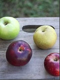
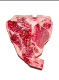
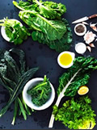
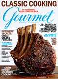
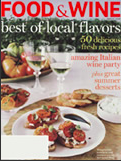
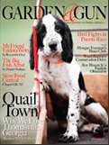
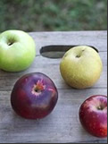
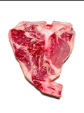
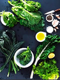
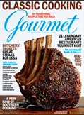
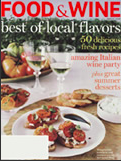
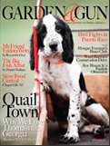
April 2011
O, The Oprah Magazine, 7 Asian-Inspired Twists on Your Favorite Dinner Recipes
Chef Andrea Reusing shares her secrets to incorporating a hint of Asia in familiar foods.
January 2011
The Wall Street Journal, A Guide to Loving Winter Greens
Think you don't want to eat chard and kale? Clearly you haven't tried these eight inspired recipes.
January 2011
Saveur, Red Poll Beef
Andrea writes about Lantern favorite Red Poll beef from the Wilkins family.
October 2010
The Wall Street Journal Online, Before the Mac, Vintage Apples
Farmers and stores push thousands of heirloom varieties, rediscovering the Duchess of Oldenburg.
September 2010
Food and Wine, An Indie Chef's Greatest Hits
Her farmers love her—and so do rock bands, Nobel laureates and novelists. Here, chef Andrea Reusing of North Carolina's Lantern shares her kitchen secrets and recipes.
February 2010
The New York Times, Lion's Head Meatballs
Andrea's recipe for Lion's Head Meatballs.
November 2009
Travel and Leisure, 25 American Hot Spots
From inventive restaurants to chic hotels, T+L chronicles a burgeoning of homegrown innovations across the heart of the country and beyond.
November 2009
Food and Wine, Tom Colicchio Dinner at Lantern
Tom Colicchio, the head judge on Bravo's Top Chef (and a Food and Wine Best New Chef 1991), blogs about his dinner at Lantern.
April 2009
Gourmet, Egg Economics
Perhaps some things in life shouldn’t be cheaper by the dozen. A North Carolina chef takes a look at the real cost of food—and flavor.
January 2009
News and Observer, Restaurant of the Year - 2008
October 2008
Gourmet, Everything is Illuminated
At Lantern Restaurant, in Chapel Hill, Andrea Reusing creates pan-asian flavors with a down-home provenance.
August 2008
The Wall Street Journal Online, Slow Food, Asian Style
Chef Andrea Reusing transforms local North Carolina ingredients into authentic Asian food.
August 2008
Food and Wine, Locavore Resources: Mid-Atlantic
Locally minded chefs Andrea Reusing of Chapel Hill, North Carolina; and Brian McBride of Washington, DC, divulge their favorite regional food finds.
2008, 2009, 2010
Independent, Best chef in Orange/ Chatham County
March 2008
Garden and Gun, The Soul of Slow Food
North Carolina chef Andrea Reusing forms a delicious and ambitious partnership with area farmers.